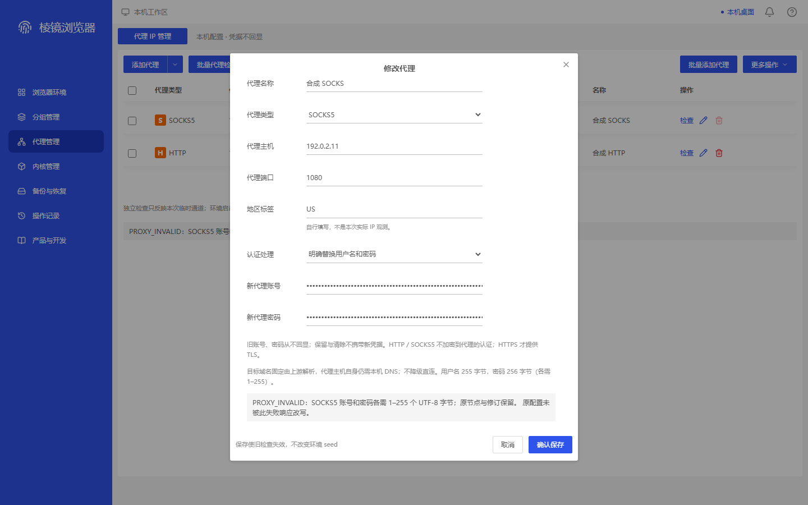
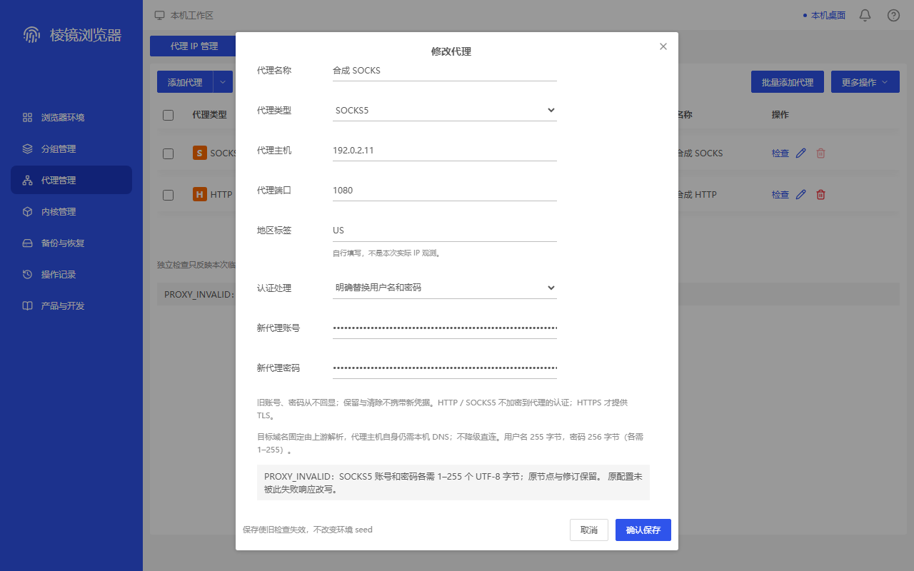

context-native-proxy-edit-socks-byte-service-refusal-bottom · 1440×900
MAPPED — 正文自然滚至23/651/628后，完整PROXY_INVALID、字节限制和末句原配置未被此失败响应改写均可读，无尾行裁切。当前用户名255/密码256字节，双输入掩码；前部字段仍完整，仅自然上移。620×726窗口、40px标题/58pxfooter及取消/保存稳定。仅原编辑容器映射、第二次有限服务拒绝，非客户端预拦截或原生验收；旧顶部FAIL保留。
同类参考容器：proxy-edit；不是同名原商业执行。

3e472e03a52de34ec5a45cb4b7fe64731bf6526a2e9b638295ba51e8151718e7
context-native-proxy-edit-socks-byte-service-refusal-bottom · 1280×800
MAPPED — 1280下原23px正文滚动范围用尽，错误两行与原配置未被此失败响应改写末句完整，无正文底边或footer裁切；用户名255/密码256字节和双password掩码可见。名称及其他前部字段未删除，标题40/footer58与620×726窗口不变，取消/保存完整。仅原编辑容器映射；第一次用户名256只有保存动作，所拍第二次密码256非UI预拦截或真实native验收，旧顶部FAIL不倒改。
同类参考容器：proxy-edit；不是同名原商业执行。

309d59789b5f2c2b986e617b25e2144fdd2e550145e80717239da110876a1fed